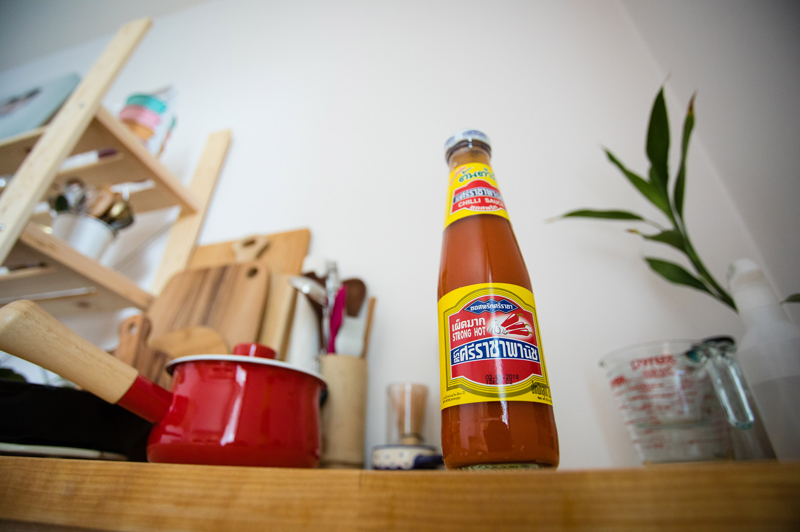
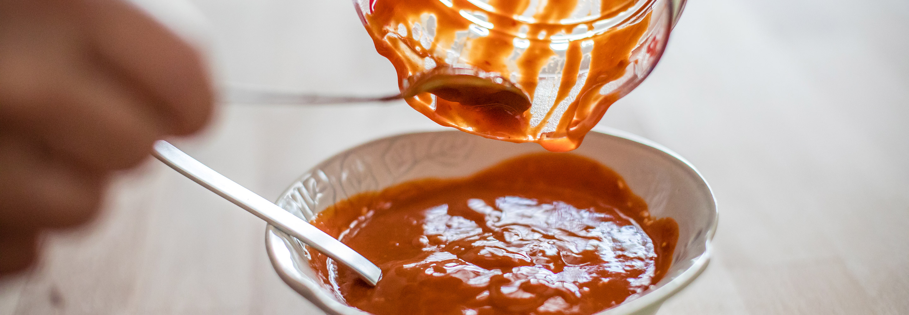
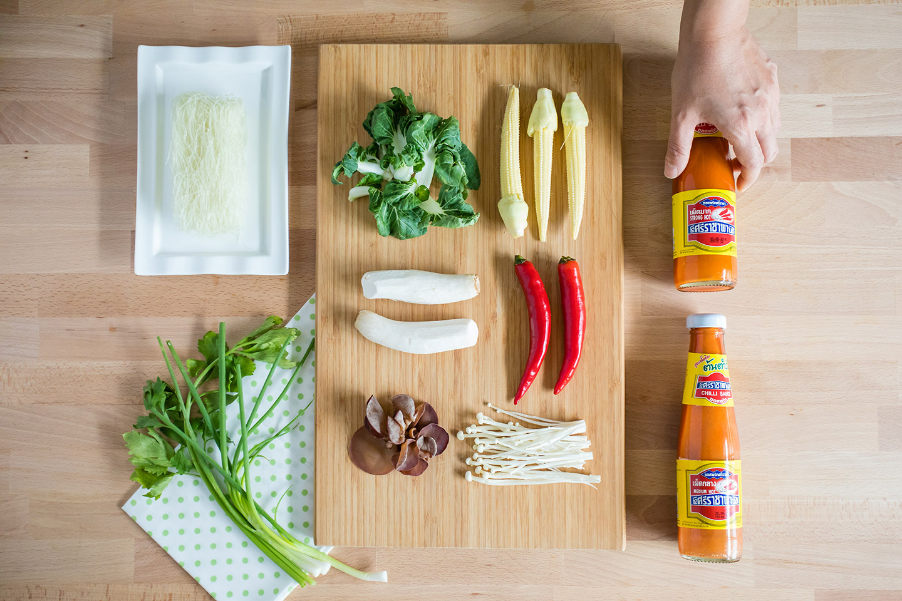
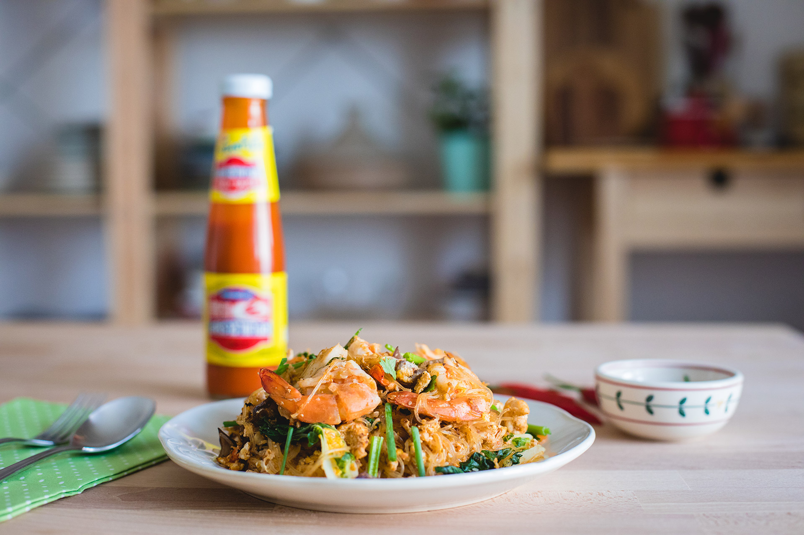
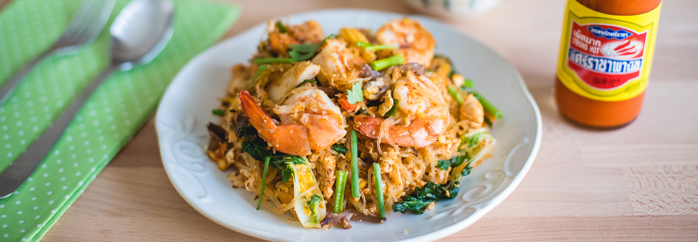

ซอสพริกศรีราชาพานิช สูตรเผ็ดมาก หรือสำหรับคนที่ไม่ชอบกินเผ็ดจะใช้สูตรเผ็ดกลางก็ได้ เต้าหู้ยี้ (อันนี้ถ้าไม่ทำสูตรกวางตุ้งก็ไม่ต้องใส่) น้ำมันงา และ งาขาวคั่ว กับเครื่องปั่นผสม จากนั้นก็แค่ปั่นซอสพริกศรีราชาพานิช เต้าหู้ยี้ และน้ำมันงาไปพร้อมกันเท่านั้นก็จบโรยหน้าด้วยงาคั่วเข้าไปอีกหน่อย ใครชอบเค็ม ชอบหวานก็ปรุงรสเพิ่มได้ตามชอบ และตามปริมาณที่พอดี
ถามว่าทำไมถึงเลือกซอสพริกศรีราชาพานิชมาทำอาหารบ่อยๆ เพราะซอสเค้าอร่อยแบบต้นตำรับซอสพริกศรีราชาจริงๆ ไม่ใส่ผงชูรส ไม่ใส่วัตถุกันเสีย ไม่เจือสี และไม่ผสมแป้ง เอามาทำเมนูได้หลากหลายไม่ใช่แค่จิ้มได้อย่างเดียวนะ ความเข้มข้นครบรส เผ็ด เปรี้ยว เค็ม หวาน ของศรีราชาพานิช สามารถนำมาดัดแปลงเป็นซอสอื่นๆ ได้อีกมากมาย ทั้งซอสหมัก ซอสยำ น้ำสลัด น้ำจิ้มสุกี้ก็เป็นอีกตัวอย่างนึง ไว้คราวหน้าจะเอาเมนูอื่นๆ ที่ใช้ศรีราชาพานิช มาอวดอีก บอกเลยมีขวดเดียวอยู่หมัด
ส่วนผสมน้ำจิ้มสุกี้สูตรกวางตุ้ง อัตราส่วนนี้ทำน้ำจิ้มได้ 1/2 ถ้วยตวงใช้ผัดได้ 4 ครั้ง
พลังงานทั้งหมดของน้ำจิ้มสูตรนี้เท่ากับ 211 kcal พลังงานต่อการผัด 1 ครั้ง 53 kcal
เรื่องผัก และ เนื้อสัตว์ชนิดต่างๆ สามารถปรับได้ตามความชอบ พลังงานก็จะปรับเปลี่ยนไปตามส่วนผสม
นำน้ำมันตั้งกระทะ เอากระเทียมสับลงเจียว เมื่อกระเทียมสุกหอม ให้นำกุ้งลงคั่วเมื่อกุ้งสุก ตักกุ้งพักไว้ ใช้กระทะใบเดิม นำสันในไก่ลงผัด ตามด้วยน้ำจิ้มสุกี้ที่เตรียมไว้ เติมน้ำเล็กน้อย แล้วนำวุ้นเส้นลงคั่วในน้ำสุกี้ (ถ้าแห้งไปให้เติมน้ำเพิ่มได้อีกเล็กน้อย) รอจนน้ำงวด ใส่ผักทั้งหมดลงผัด เมื่อเข้ากันดี ให้ตอกไข่ใส่ลงไป เกลียไข่ให้กระจายออก ตักตัวสุกี้ที่ผัดไว้ลงกลบบนไข่ รอซักครู่แล้วพลิก คลุกเคล้าให้เข้ากัน เติมกุ้งที่พักไว้ ตามด้วยต้นหอม และ ขึ้นฉ่ายลงไป ตักเสิร์ฟ พร้อมน้ำจิ้มสุกี้แซบที่เตรียมไว้ หรือใครจะทานคู่กับ ซอสพริกศรีราชาพานิชก็อร่อยไปอีกแบบ
พลังงานตามสูตร รวมน้ำจิ้มที่ใช้ผัด จะเท่ากับ 552 kcal ซึ่งจานใหญ่มาก คนที่ทานน้อยสามารถทานได้ 2 คน ก็จะได้รับพลังงานกันไป คนละ 276 kcal สำหรับสายจัดหนัก มื้อหลังออกกำลังกาย จะทานคนเดียวหมดจานก็ไม่ว่ากัน เรียกว่าอิ่ม อร่อย เข้มข้น พุงกางแน่นอน
เกือบลืม! สำหรับแฟนๆ ของซอสพริกศรีราชาพานิช เห็นฉลากบนขวดในรูปถ่าย และวีดีโอ แล้วไม่เหมือนที่เค้าวางขายกัน ไม่ต้องตกใจไปนะ เพราะตอนนี้ ซอสพริกศรีราชาพานิชเค้าเปลี่ยนฉลากใหม่ไฉไลกว่าเดิม แต่รสชาติยังคงความเข้มแบบต้นตำรับเหมือนเดิมนะจ๊ะ หาซื้อได้ที่ ซุปเปอร์มาร์เก็ตชั้นนำทั่วไป
เมนูสุกี้ถือเป็นเมนูเพื่อสุขภาพเมนูนึง ที่ทำให้ได้สารอาหารครบถ้วนในจานเดียวกัน ทั้ง โปรตีน คาร์โบไฮเดรต ไขมัน วิตามิน เกลือแร่ และใยอาหาร หากกำลังควบคุมอาหาร หรือลดน้ำหนัก ให้เลือกเป็น สุกี้น้ำ เพราะจะได้รับพลังงานจากไขมันน้อยกว่า สุกี้แห้ง หรืออีกทางเลือกนึงคือเข้าครัว เตรียมเมนูด้วยตัวเอง ปรุงส่วนของน้ำจิ้มสุกี้เอง ลดปริมาณน้ำตาลลง เลือกใช้ซอสและวัตถุดิบที่มีคุณภาพ ก็จะช่วยให้เมนูคลีนๆ อย่างสุกี้ ดีต่อสุขภาพเพิ่มมากขึ้น
ขึ้นข้างบนมหาวิทยาลัยขอนแก่น
Khon kaen University
เบอร์โทรศัพท์
043-009700
ที่อยู่
123 หมู่ 16 ถ.มิตรภาพ ต.ในเมือง อ.เมือง จ.ขอนแก่น 40002